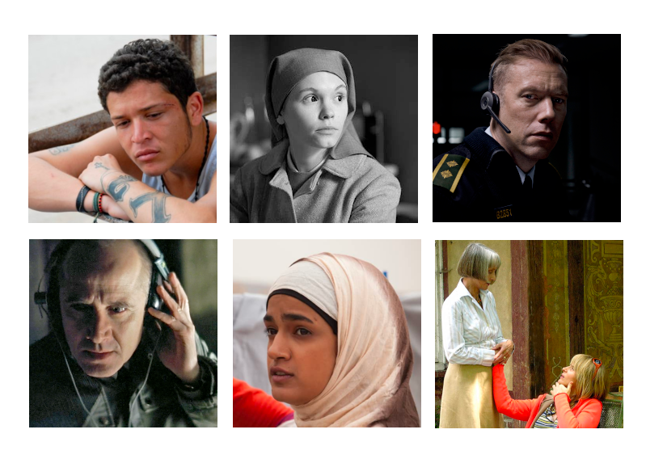
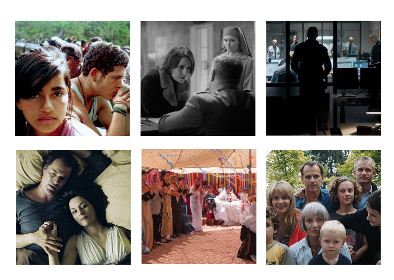

Foreign Choices
This describes a study group that some retirement learning
institutes in the Boston area are offering in 2021. Group
leader is
J Adrian Zimmer.
Note:
-
For LLARC in
the fall of 2021, there are only five class meetings and
consequently only five films. The last film, which is quite
different from the others anyway, will not be covered.
One way to gain a better understanding of a foreign culture is
to watch people making decisions in it. In "Foreign Choices"
we will discuss decisions being made in six different foreign
films. Chosen from mostly European cultures these films
require their protagonists to make life changing decisions.
Class discussions will emphasize those decisions in the
context of their ambient cultures.
We can gain some understanding of the difference between the
depicted cultures from the work of Dutch psychologist Geert Hofstede
who has measured cultures on six different dimensions:
-
Power Distance: A higher value means those lower in any
hierarchy are less able to express their opinions freely.
- Individualism: A higher value means individual independence
is more valued and close links with others are less influential.
- Uncertainty Avoidance: A higher value means people will
dislike ambiguity and tend to ignore alternative points of view.
- Masculinity: A higher value means people of both genders
tend more to assertiveness and to admiring material rewards
and heroism. There is no expectation that both genders be
equal in this tendency, only that both genders will behave
more in
a way that we tend to think of as masculine. A lower value means people
tend more towards cooperation, modesty, and quality of life.
- Long-Term Orientation: A higher value means planning for the
future is more important.
- Indulgence: A higher value means there is more tolerance for
letting people do their own thing.
Each of these dimensions is rated very high or very low in at
least one of the six depicted cultures.
Here are the six films:
-
"Sin Nombre", Cary Fukunaga, 2009 in Spanish. Fukunaga grew
up in California and has no Latin background. However he is
fluent in Spanish and spent considerable time in Mexico
researching this film including travelling with migrant
caravans and
meeting gang members in jail. His protagonists are a gang
member Casper and a young Honduran teenage girl Sayra in need
of help getting across Mexico to the U.S. Early in the film
Casper must decide whether to risk the gang's wrath for
Sayra's sake. Other decisions concerning loyalty occur in
the film as well.
Mexican culture is high on power distance, uncertainty
avoidance, and indulgence. It is low on long-term
orientation.
Class
readings
for Sin Nombre.
- "Ida", Pawel Pawlikowski, 2014 in Polish. Ida is an 18
year old Catholic novitiate who is sent out into the world to
learn her family heritage before she takes her vows. She is
introduced to the world of communist Poland by her aunt who is
Jewish, noncomformist, and a judge. Of course by the time Ida
must decide whether to take her vows she has learned of
lifestyle choices unknown to her at the start of the film. The film
is black and white and the cinematography quite artistic.
Polish culture is high on uncertainty avoidance and low on
indulgence.
- "The Guilty", Gustav Möller, 2018 in Danish. Asger is a
Copenhagen policeman temporarily demoted to serving as the
Danish equivalent of an 911 operator. While trying to help a
woman Iben who is being abducted Asger decides to overstep
both his 911 and his police roles. This film is unusual in
that all the action happens over the phone. That does not
detract from the suspense; the story could have been a radio
drama. But the many views we get of Asger in his 911 office
enhance our understanding of his personality.
Danish culture is low on power distance, masculinity, and
uncertainty avoidance.
- "The Lives of Others", Florian Henckel von Donnersmarck, 2006
in German. Georg and Christa-Maria are caught between East
German censorship and a corrupt politician. Their apartment
is secretly monitored by Stasi agent Gerd. Trying to live
ordinary, decent lives in a corrupt system, all three have
decisions to make but it is Gerd's evolving attitude towards
his work that stands out for us.
German culture is high on long-term orientation. Possibly
East German culture was high on power distance but the
Hofstede site has no entry for East Germany.
- "Sand Storm", Elite Zexer, 2016 in Arabic. Elite Zexer is an
Israeli writer, director, and film professor. She spent five
years interviewing in Bedouin villages to prepare for this
film. Her Bedouin characters, Suliman, Jalila, and Layla, are
father, mother, and daughter. Suliman's decisions are
determined by his village's conservative culture. We don't
notice that bias at first because he allows his marriage-age
daughter to attend college. Things change when Layla falls in
love with a classmate. It is Jalila and Layla's evolving
decisions that make this movie interesting.
Bedouin culture is high on power distance and low on
individualism and long-term orientation. But note:
-
The Hofstede web site does not measure Bedouin culture. An
average of the ratings for Jordan and the United Arab Emirates
is used here. Jordan because it is close to Israel where the
Bedouin village of the film is located. The UAE because it is
a small country with a high proportion of Bedouins.
- "Summer Hours", Olivier Assayas, 2009 in French. This
movie shows how previous decisions constrain future
decisions. Frederic, Adrienne, and Jerome are three siblings
who have chosen culturally and geographically separate lives.
When their mother dies, it becomes clear they can no longer
hold the extended family together and must find a way to sell
off the artifacts of their mother's artistic and gentile
lifestyle. Their own progeny, who have benefited on holidays from
their grandmother's lifestyle, are oblivious to the decisions being made
around them. A comfortable, drama-free film, "Summer Hours"
manages to include a demonstration of how generations keep
their sex lives from each other.
French culture is high on uncertainty avoidance.
In class we will take a more nuanced view of the Hofstede
ratings than indicated above. We will also rely on some anecdotal evidence from
foreigners living within the target cultures.
All six movies can currently be streamed online. If that
should change any of these films can be shown over Zoom at a
specified time.
Note that "Summer Hours" will be omitted from 5 week versions
of this study group.
